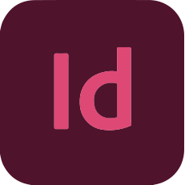

— Hola!
Soy Lourdes...
— Diseñadora Gráfica
— Un poco sobre mi
Estudiante de la carrera de Diseño y Comunicación Visual. Una persona curiosa, proactiva y con muchas ganas de seguir aprendiendo. Me gusta trabajar en equipo, enfrentar nuevos retos y encontrar soluciones creativas a los problemas. He tenido la suerte de participar en proyectos diversos que me han enseñado a adaptarme rápido y a sacar lo mejor de cada situación.
Me apasiona lo que hago y siempre estoy buscando maneras de mejorar, crecer y aportar buenas ideas. Si hay café y buen ambiente, seguro que podemos hacer grandes cosas juntos.
MANEJO DE PROGRAMAS
-
 Adobe Illustrator (Avanzado)
Adobe Illustrator (Avanzado)
-
 Adobe Photoshop (Avanzado)
Adobe Photoshop (Avanzado)
- Adobe InDesign (Avanzado)
-
 Adobe After Effects (Básico)
Adobe After Effects (Básico)
-
 Adobe Premiere (Básico)
Adobe Premiere (Básico)
APTITUDES
- Responsabilidad
- Creatividad
- Resolución de problemas
- Adaptación
- Trabajo en equipo
EXPERIENCIA LABORAL
- 2023-2024
- Diseñadora Gráfica Freelance
- Diseño editorial e identidades visuales
- 2024-2025
- Editorial Tango Sin Fin - Diseño editorial
- Adaptación de libros y edición para e-book
Brindo servicios de diseño gráfico orientados a crear piezas visuales que comuniquen con claridad y personalidad. Trabajo en la creación de identidades visuales, diseño de logotipos, material gráfico para redes sociales, web e impresos. Cada proyecto lo encaro con un enfoque creativo y funcional, buscando siempre reflejar la esencia de cada marca o idea.